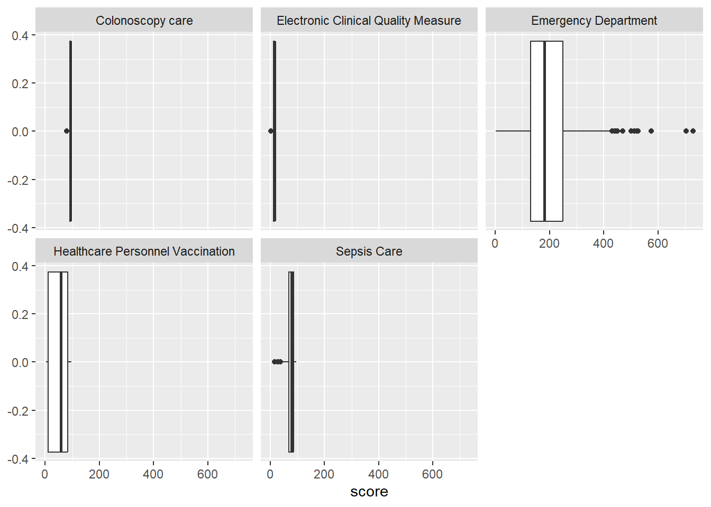
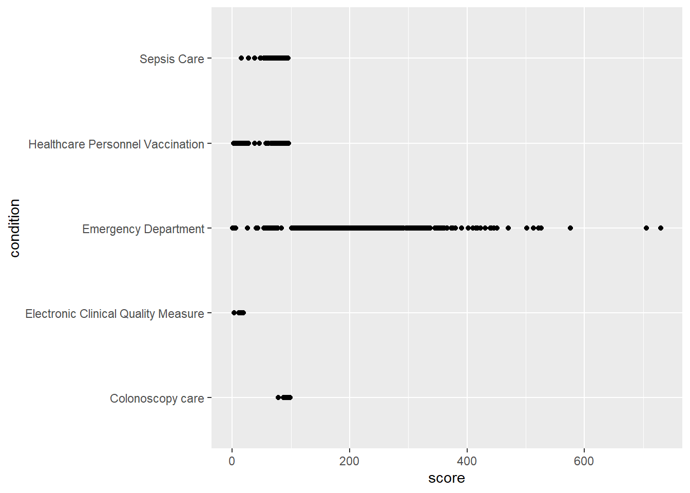
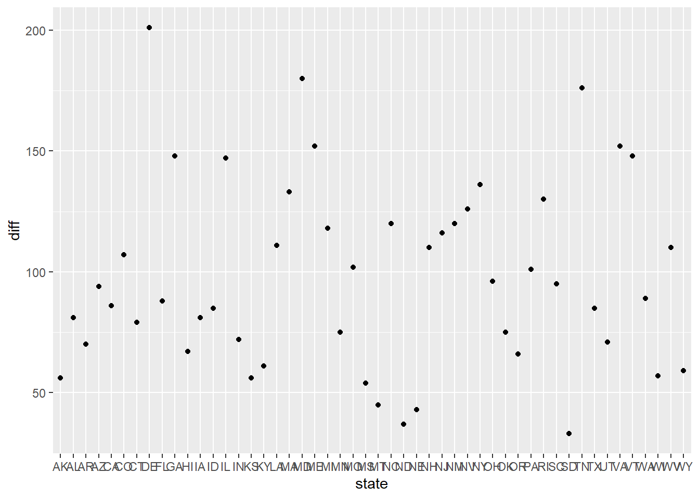
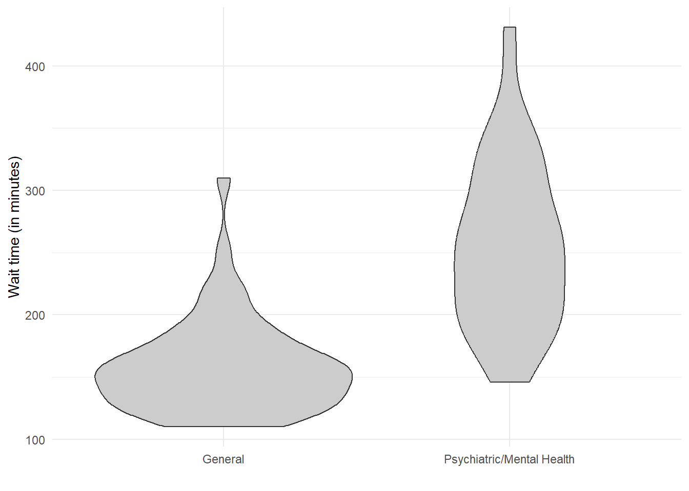
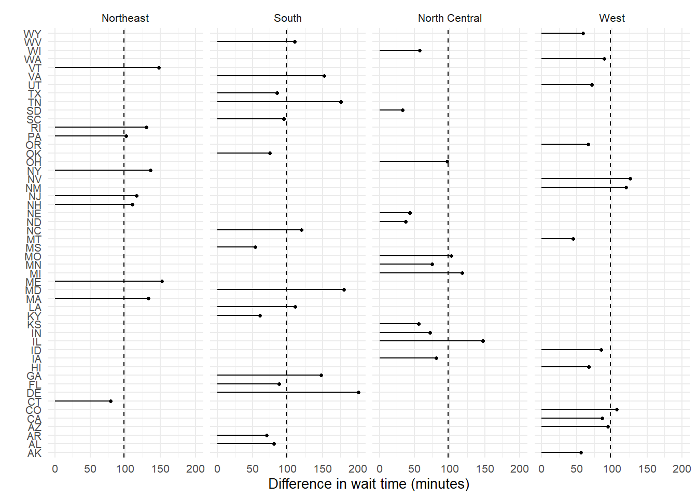
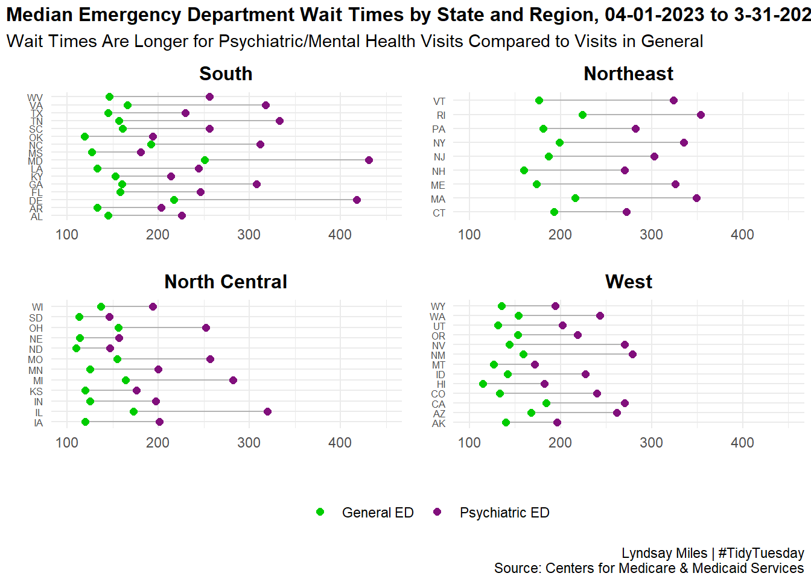

── Attaching core tidyverse packages ──────────────────────── tidyverse 2.0.0 ──
✔ dplyr 1.1.4 ✔ readr 2.1.6
✔ forcats 1.0.1 ✔ stringr 1.6.0
✔ ggplot2 4.0.1 ✔ tibble 3.3.0
✔ lubridate 1.9.4 ✔ tidyr 1.3.2
✔ purrr 1.2.0
── Conflicts ────────────────────────────────────────── tidyverse_conflicts() ──
✖ dplyr::filter() masks stats::filter()
✖ dplyr::lag() masks stats::lag()
ℹ Use the conflicted package (<http://conflicted.r-lib.org/>) to force all conflicts to become errors
Attaching package: 'plotly'
The following object is masked from 'package:ggplot2':
last_plot
The following object is masked from 'package:stats':
filter
The following object is masked from 'package:graphics':
layoutTidy Tuesday | Week 1, 2026
Bring your own data: From Tidy Tuesday 2025, week 14: Timely and Effective Care by US State
Original source: https://github.com/rfordatascience/tidytuesday/blob/main/data/2025/2025-04-08/readme.md
#census_api_key("e0d96d9fc08ed263c3bc5890269416852471b9b6", install = TRUE) # Set install = TRUE to save it for future sessionspop_2024_state <- get_estimates(
geography = "state",
product = "population",
vintage = 2023
) %>%
filter(variable == "POPESTIMATE")%>%
rename(state_name = "NAME",
geoid = "GEOID")Using the Vintage 2023 Population Estimatesstate_list <- data.frame(state_name = state.name, state = state.abb, region = state.region, division = state.division)
df_pop_2024 <- pop_2024_state %>%
left_join(state_list, by = "state_name") %>%
select(-c(variable))care_state <- readr::read_csv('https://raw.githubusercontent.com/rfordatascience/tidytuesday/main/data/2025/2025-04-08/care_state.csv')Rows: 1232 Columns: 8
── Column specification ────────────────────────────────────────────────────────
Delimiter: ","
chr (5): state, condition, measure_id, measure_name, footnote
dbl (1): score
date (2): start_date, end_date
ℹ Use `spec()` to retrieve the full column specification for this data.
ℹ Specify the column types or set `show_col_types = FALSE` to quiet this message.EDA
names(care_state) #state, condition, measure_id, measure_name, score, footnote, start_date, end_date[1] "state" "condition" "measure_id" "measure_name" "score"
[6] "footnote" "start_date" "end_date" unique(care_state$state) #56 states/territories [1] "AK" "AL" "AR" "AS" "AZ" "CA" "CO" "CT" "DC" "DE" "FL" "GA" "GU" "HI" "IA"
[16] "ID" "IL" "IN" "KS" "KY" "LA" "MA" "MD" "ME" "MI" "MN" "MO" "MP" "MS" "MT"
[31] "NC" "ND" "NE" "NH" "NJ" "NM" "NV" "NY" "OH" "OK" "OR" "PA" "PR" "RI" "SC"
[46] "SD" "TN" "TX" "UT" "VA" "VI" "VT" "WA" "WI" "WV" "WY"#it might help to find a list of the full names of the states/territories
unique(care_state$condition) [1] "Healthcare Personnel Vaccination" "Emergency Department"
[3] "Colonoscopy care" "Cataract surgery outcome"
[5] "Electronic Clinical Quality Measure" "Sepsis Care" #6 conditions
#it might be interesting to look at
unique(care_state$measure_id) [1] "HCP_COVID_19" "IMM_3" "OP_18b"
[4] "OP_18b_HIGH_MIN" "OP_18b_LOW_MIN" "OP_18b_MEDIUM_MIN"
[7] "OP_18b_VERY_HIGH_MIN" "OP_18c" "OP_18c_HIGH_MIN"
[10] "OP_18c_LOW_MIN" "OP_18c_MEDIUM_MIN" "OP_18c_VERY_HIGH_MIN"
[13] "OP_22" "OP_23" "OP_29"
[16] "OP_31" "SAFE_USE_OF_OPIOIDS" "SEP_1"
[19] "SEP_SH_3HR" "SEP_SH_6HR" "SEV_SEP_3HR"
[22] "SEV_SEP_6HR" #22 measure ids
care_state %>%
mutate(complete = complete.cases(score)) %>%
group_by(condition, complete) %>%
summarize(N = n()) %>%
mutate(prop = N/sum(N))`summarise()` has grouped output by 'condition'. You can override using the
`.groups` argument.# A tibble: 12 × 4
# Groups: condition [6]
condition complete N prop
<chr> <lgl> <int> <dbl>
1 Cataract surgery outcome FALSE 44 0.786
2 Cataract surgery outcome TRUE 12 0.214
3 Colonoscopy care FALSE 4 0.0714
4 Colonoscopy care TRUE 52 0.929
5 Electronic Clinical Quality Measure FALSE 4 0.0714
6 Electronic Clinical Quality Measure TRUE 52 0.929
7 Emergency Department FALSE 75 0.112
8 Emergency Department TRUE 597 0.888
9 Healthcare Personnel Vaccination FALSE 8 0.0714
10 Healthcare Personnel Vaccination TRUE 104 0.929
11 Sepsis Care FALSE 20 0.0714
12 Sepsis Care TRUE 260 0.929 #NAs
na_rows_long <- care_state %>%
select(state, condition, measure_id) %>%
mutate(row_id = row_number()) %>%
pivot_longer(-row_id, names_to = "column", values_to = "value") %>%
filter(is.na(value)) %>%
select(row_id, column)
na_rows_long_num <- care_state %>%
select(score) %>%
mutate(row_id = row_number()) %>%
pivot_longer(-row_id, names_to = "column", values_to = "value") %>%
filter(is.na(value)) %>%
select(row_id, column)
#only want to include complete cases but am also going to leave 'cataract surgery outcome' because 78.6% do not have scores#using 1065 complete cases
df <- care_state %>%
mutate(complete = complete.cases(score),
period = paste0(start_date, " to ", end_date)) %>%
filter(condition != "Cataract surgery outcome",
complete == TRUE) %>%
left_join(df_pop_2024, by = "state")EDA: cleaned df
unique(df$period) #4 unique timepoints, [1] "2024-01-01 to 2024-03-31" "2023-10-01 to 2024-03-31"
[3] "2023-04-01 to 2024-03-31" "2023-01-01 to 2023-12-31"#Jan 2023-Dec 2023
#Apr 2023-Mar 2024
#Oct 2023-Mar 2024
#Jan 2024-Mar 2024
#shape of cleaned data
df %>% group_by(condition) %>% summarize(N = n())# A tibble: 5 × 2
condition N
<chr> <int>
1 Colonoscopy care 52
2 Electronic Clinical Quality Measure 52
3 Emergency Department 597
4 Healthcare Personnel Vaccination 104
5 Sepsis Care 260#ED = 597, Healthcare Personnel Vax = 104, Sepsis Care = 260
plot_1<- ggplot(data = df, aes(x=score, fill = condition))+geom_histogram()
#ED scores significantly different/higher than other groups
#this is because for ED, the score is # of minutes, the value for other conditions is %
ggplot(data = df, aes(x=score))+geom_boxplot()+facet_wrap(~condition)
ggplot(data = df, aes(x =score, y = condition))+geom_point()
quartiles_by_group <- df %>%
group_by(condition) %>%
summarise(
q1 = quantile(score, 0.25, na.rm = TRUE),
median = quantile(score, 0.50, na.rm = TRUE),
q3 = quantile(score, 0.75, na.rm = TRUE),
.groups = "drop"
)
#ED median # minutes spent in ED before being sent home: 182, about 3 hours! Range is 130 (2 hrs, 10 minutes) and 250 (4 hrs, 10 minutes)df_edtime <- df %>% filter(condition == "Emergency Department",
#remove measures that are NOT times (these are percentages)
measure_id %in% c("OP_18b", "OP_18c"),
!state %in% c("PR"))%>%
mutate(
state = fct_inorder(state),
visit_type = case_when(
str_detect(measure_id, "OP_18b") ~ "General",
str_detect(measure_id, "OP_18c") ~ "Psychiatric/Mental Health",
TRUE ~ measure_id
)) state_list_region <- state_list %>% select(state, region)
#Differences
df_edtime_wider <- df_edtime %>%
select(state, score, visit_type, value)%>%
pivot_wider(names_from = c(visit_type), values_from = score) %>%
mutate(diff = `Psychiatric/Mental Health` - `General`) %>%
arrange(desc(diff)) %>% # descending order
mutate(state = factor(state, levels = state)) %>% # levels = current row order%>%
left_join(state_list_region, by = "state")%>% drop_na(region)
ggplot(data = df_edtime_wider, aes(x= state, y = diff))+ geom_point() 
avg_diff <- mean(df_edtime_wider$diff, na.rm = TRUE)
ggplot(df_edtime, aes(x = visit_type, y = score)) +
geom_violin(fill = "grey80")+
labs(x = "", y = "Wait time (in minutes)")+
theme_minimal()
ggplot(df_edtime_wider, aes(x = state, y = diff)) +
geom_segment(
aes(x = state, xend = state, y = 0, yend = diff),
linewidth = 0.4
) +
geom_point(size = 1) +
geom_hline(yintercept = avg_diff, linetype = "dashed", linewidth = 0.4) +
coord_flip() +
labs(x = "", y = "Difference in wait time (minutes)") +
theme_minimal(base_size = 10) +
facet_grid(~region)
myfunc <- function(df){
ggplot(df, aes(y = state)) +
geom_segment(
aes(
x = General,
xend = `Psychiatric/Mental Health`,
yend = state
),
linewidth = .5,
color = "grey70"
) +
geom_point(
aes(x = General, color = "General ED"),
size = 2
) +
geom_point(
aes(x = `Psychiatric/Mental Health`, color = "Psychiatric ED"),
size = 2
) +
scale_color_manual(
values = c(
"General ED" = "#00CC00",
"Psychiatric ED" = "#810f7c"
),
name = NULL
) +
labs(
x = "",
y = "") +
theme_minimal() +
theme(legend.position = "none")
}#South
df_edtime_wider_south <- df_edtime_wider %>%
filter(region == "South")
p1<- myfunc(df_edtime_wider_south)+
labs(title = "South")+
xlim(xmin = 100, x_max=450)+
theme(axis.text.y = element_text(size = 6),
plot.title = element_text(hjust = 0.5,
plot.margin = margin(2, 2, 2, 2)))Warning in element_text(hjust = 0.5, plot.margin = margin(2, 2, 2, 2)): `...` must be empty.
✖ Problematic argument:
• plot.margin = margin(2, 2, 2, 2)#Northeast
df_edtime_wider_ne <- df_edtime_wider %>%
filter(region == "Northeast")
p2<- myfunc(df_edtime_wider_ne) +
labs(title = "Northeast")+
xlim(xmin = 100, x_max=450)+
theme(axis.text.y = element_text(size = 6),
plot.title = element_text(hjust = 0.5,
plot.margin = margin(2, 2, 2, 2)))Warning in element_text(hjust = 0.5, plot.margin = margin(2, 2, 2, 2)): `...` must be empty.
✖ Problematic argument:
• plot.margin = margin(2, 2, 2, 2)#North central
df_edtime_wider_nc <- df_edtime_wider %>%
filter(region == "North Central")
p3<- myfunc(df_edtime_wider_nc)+
labs(title = "North Central")+
xlim(xmin = 100, x_max=450)+
theme(axis.text.y = element_text(size = 6),
plot.title = element_text(hjust = 0.5,
plot.margin = margin(2, 2, 2, 2)))Warning in element_text(hjust = 0.5, plot.margin = margin(2, 2, 2, 2)): `...` must be empty.
✖ Problematic argument:
• plot.margin = margin(2, 2, 2, 2)#West
df_edtime_wider_west <- df_edtime_wider %>%
filter(region == "West")
p4<-myfunc(df_edtime_wider_west)+
labs(title = "West")+
xlim(xmin = 100, x_max=450)+
theme(axis.text.y = element_text(size = 6),
plot.title = element_text(hjust = 0.5,
plot.margin = margin(2, 2, 2, 2)))Warning in element_text(hjust = 0.5, plot.margin = margin(2, 2, 2, 2)): `...` must be empty.
✖ Problematic argument:
• plot.margin = margin(2, 2, 2, 2)combined_plots <- (p1 + p2 + p3 +p4)combined_plots +
plot_layout(guides = "collect")+
plot_annotation(
title = "Median Emergency Department Wait Times by State and Region, 04-01-2023 to 3-31-2024",
subtitle = "Wait Times Are Longer for Psychiatric/Mental Health Visits Compared to Visits in General",
caption = "Lyndsay Miles | #TidyTuesday\nSource: Centers for Medicare & Medicaid Services"
) &
theme(
legend.position = "bottom",
plot.title = element_text(face = "bold", size = 12),
plot.subtitle = element_text(size = 11),
plot.caption = element_text(hjust = 1),
plot.margin = margin(t = 4, r = 2, b = 2, l = 2)
)